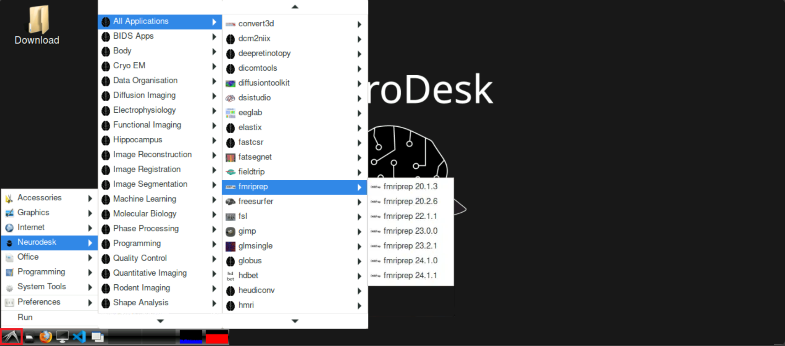
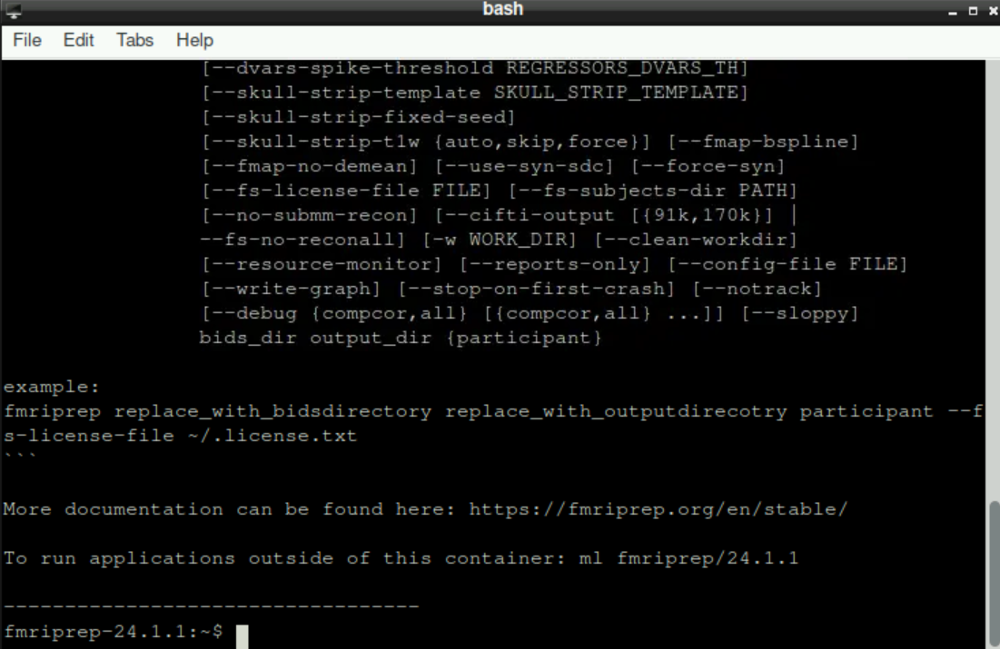
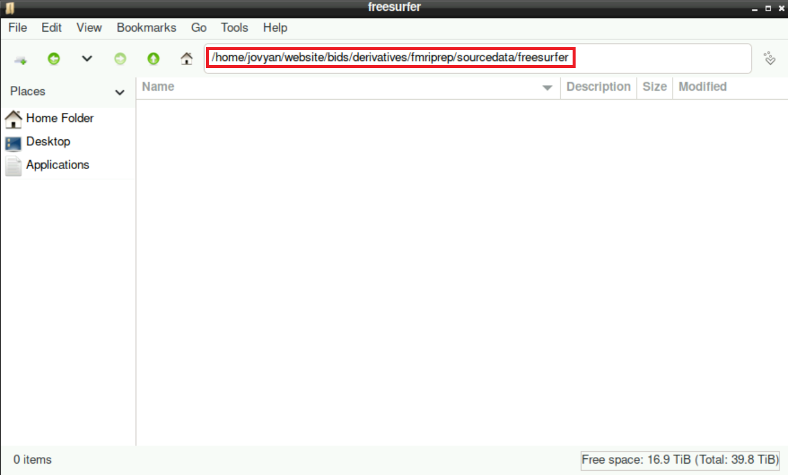
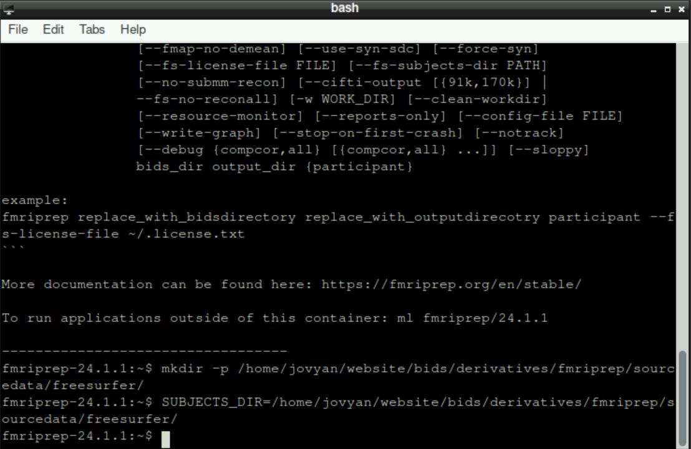
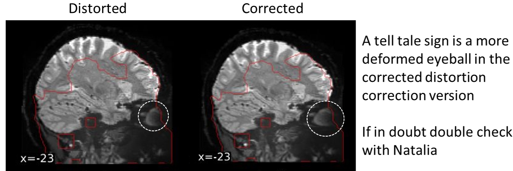

05 - How to run fmriprep
1 This Site is currently under construction
2 Before running fmriprep
Before you start fmriprep, you have to make sure, that you:
3 Starting fmriprep
To start fmriprep, click on the bird symbol at the bottom left on neurodesk, hover neurodesk, then All applications and navigate to fmriprep. Select the version of fmriprep that you want to use 
After selecting your version, a new bash window opens and fmriprep loads. This can take a few moments, be patient! When everything is ready, the bottom line should state fmriprep-"Version" (with “Version” being whatever version you selected, for example fmriprep-24.1.1) 
4 Setting up necessary directories and defining “SUBJECTS_DIR”
First, you need to create some new directories that are necessary for fmriprep to run properly. For this, enter the following command (adapt the path(s) if necessary)
mkdir -p /home/jovyan/website/bids/derivatives/fmriprep/sourcedata/freesurfer/By confirming your command with Enter, you´ll find the new directory structure within you derivatives directory
Then, we need to specify where fmriprep should store the resulting files with this command (again, adapt the path(s) if necessary):
SUBJECTS_DIR=/home/jovyan/website/bids/derivatives/fmriprep/sourcedata/freesurfer/
Hint: you can copy/paste both commands from above and execute them by pressing enter simultaneously, it doesn´t matter
5 fmriprep command
With the setup done, you can now run the command:
fmriprep /home/jovyan/website/bids /home/jovyan/website/bids/derivatives/fmriprep participant --bold2t1w-init header --force-bbr -w /home/jovyan/website/fmriprep_tmp --output-spaces T1w fsaverage fsnative --participant-label sub-999 --nprocs 8 --mem 10000 --skip_bids_validation --stop-on-first-crash -v --fs-license-file /home/jovyan/website/freesurferlicense/license.txtImportant: adapt the flag --participant-label sub-999 accordingly, so that you state the subject you want to preprocess
Hint: same as before, you could run this command with the two commands above for the setup as well. The only important thing is the order: first the command for making the directories, then defining SUBJECTS_DIRand finally the fmriprep command.
6 Waiting
When fmriprep started, now it´s probably time to get a coffee and do something else. This process will take quite some time (hours), you don´t have to stare at the output the whole time. You can also close the Tab where you opened neurodesk! Even if you close it, the program continues its work!
7 Troubleshooting
I ran fMRIprep but no distortion correction happened
fMRIprep might be using an outdated BIDS specification. Here this is related to the fmap
jsonfile. See Information about BIDS uri, or the corresponding wiki entry.- If your fmap .json file is using the BIDS uri specification in the
IntendedForfield and you are using an older fMRIprep version then this will need to be changed to the older path specification e.g.
BIDS uri spec for fmriprep 24.0.0 or newer:
"IntendedFor": [ "bids::sub-1181001/ses-1/func/sub-1181001_ses-1_task-movie_run-1_bold.nii.gz", "bids::sub-1181001/ses-1/func/sub-1181001_ses-1_task-movie_run-2_bold.nii.gz", etc ]Older fmap spec for fmriprep older than 24.0.0:
"IntendedFor": [ "ses-1/func/sub-1181001_ses-1_task-movie_run-1_bold.nii.gz", "ses-1/func/sub-1181001_ses-1_task-movie_run-2_bold.nii.gz", etc ]- If your fmap .json file is using the BIDS uri specification in the
- I ran fMRIprep and the distortion correction of the data is too extreme

This is an issue with certain issues of fMRIprep. Using fMRIprep version 20.2.7 may be needed to avoid the extreme distortion correction (newer versions of fMRIprep haven’t been tested)
If using already run FreeSurfer
recon-alloutput and have specified anexpert-optsfile then fMRIprep shows multiple errors- In the directory that has the prerun
recon-allthere is a folderscriptsthat saves theexpert-optsfile. Removing this file allows fMRIprep to run
- In the directory that has the prerun
If fmriprep fails silently (i.e. gives no error) on coregistering the functional to the structural scan, the solution is (if your structural and functional scans are from the same session) to add the following flag:
--bold2t1w-init header
8 The next steps
Congratulations, you successfully preprocessed your data and you are one step closer to analyzing your data!
To continue in your journey to your Analysis, please return to the Overview-Page to check what to do next.
Alternatively, here is a list of potential next steps to continue with